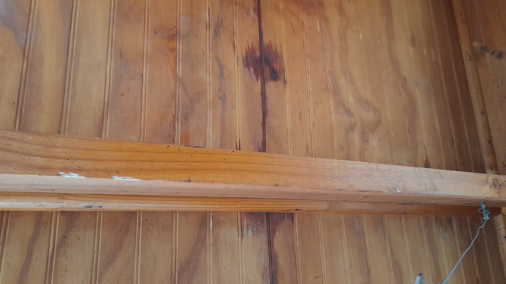
Inicio del sistema frontal - filtración de lluvia
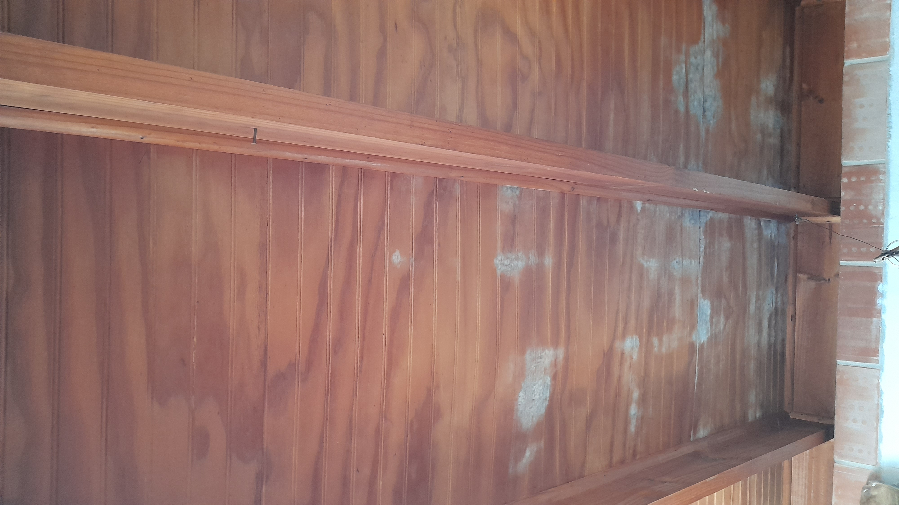
Posterior - aparición de hongo por filtración
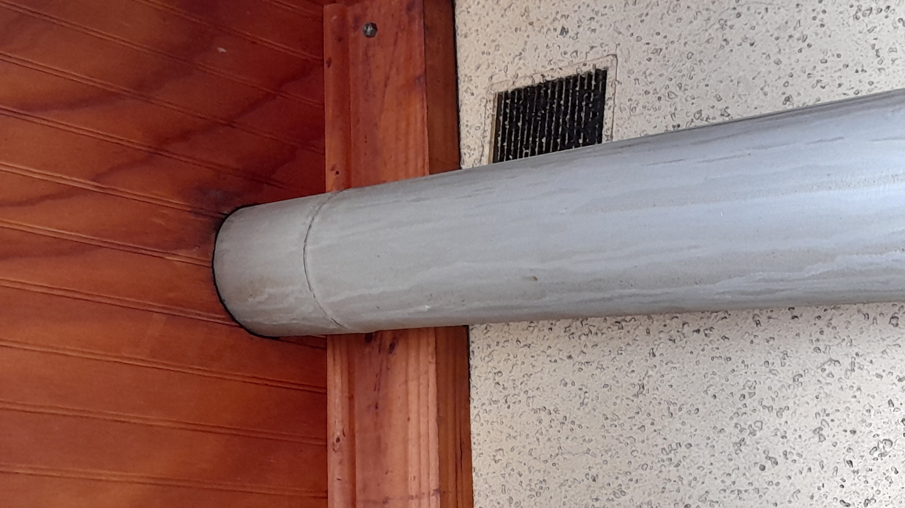
Estado general del calefón con filtración
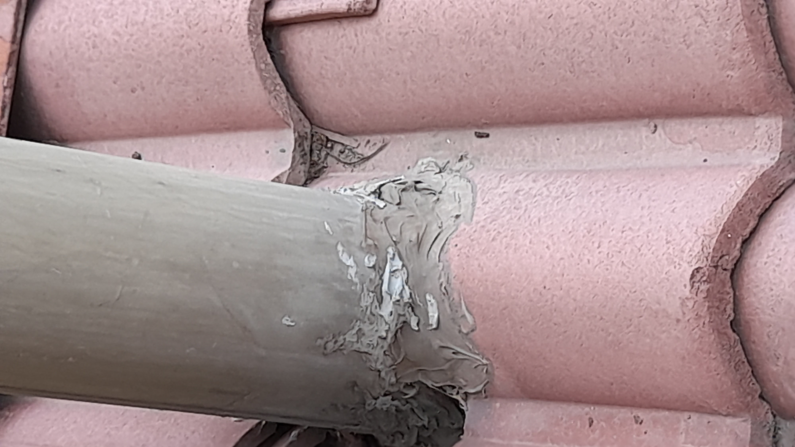
Posible lugar de filtración
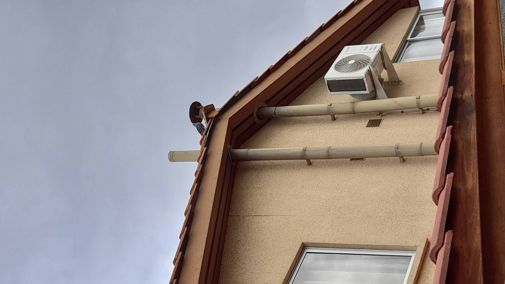
Ducto del calefón sin cubierta
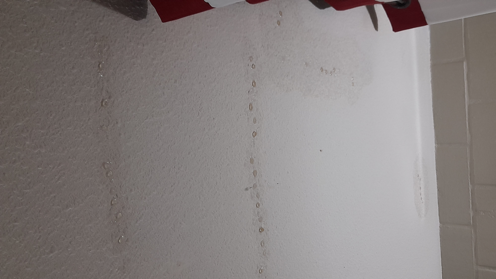
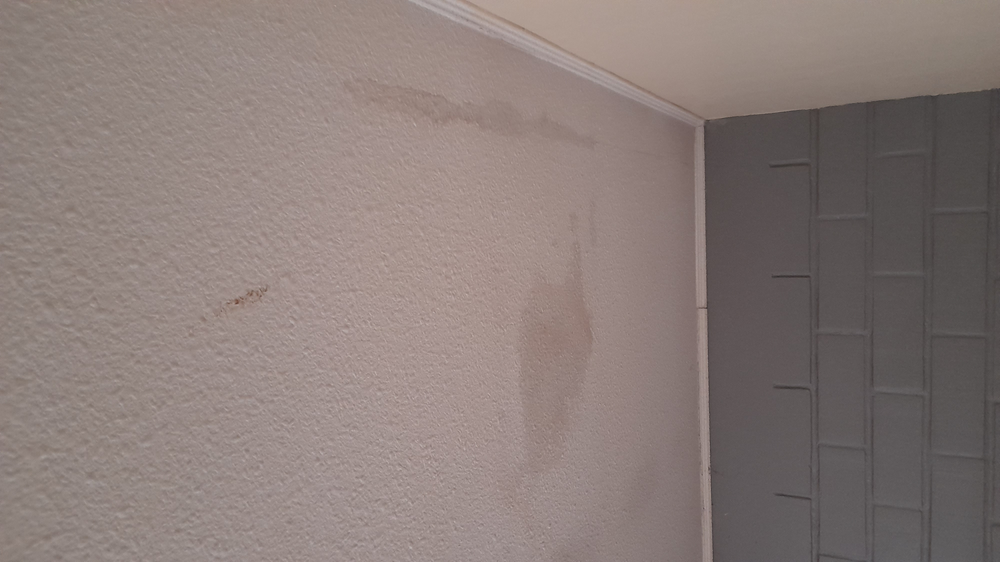
Cielo falso con humedad
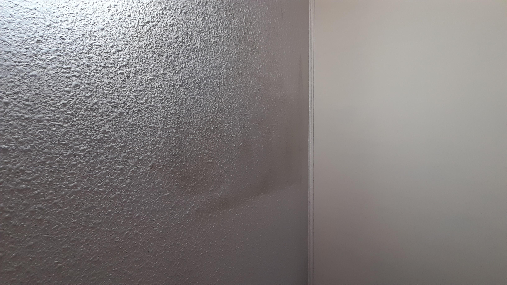
Cielo falso con humedad
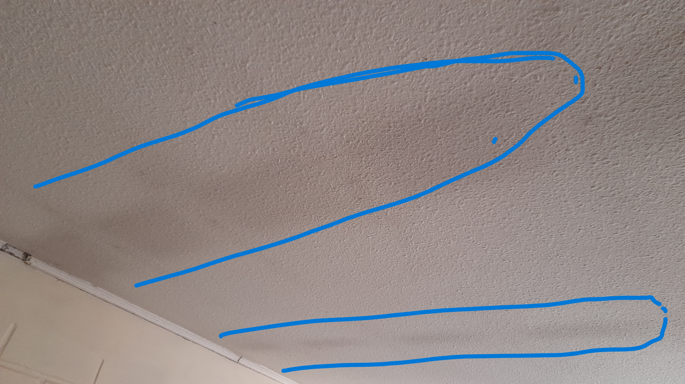
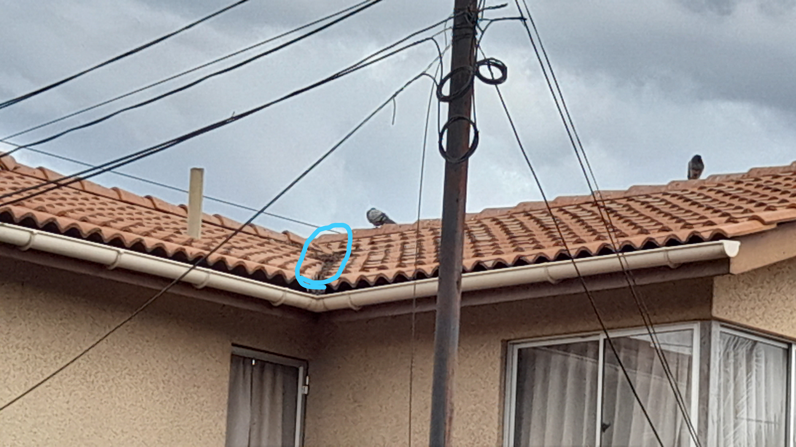
Estado del canal
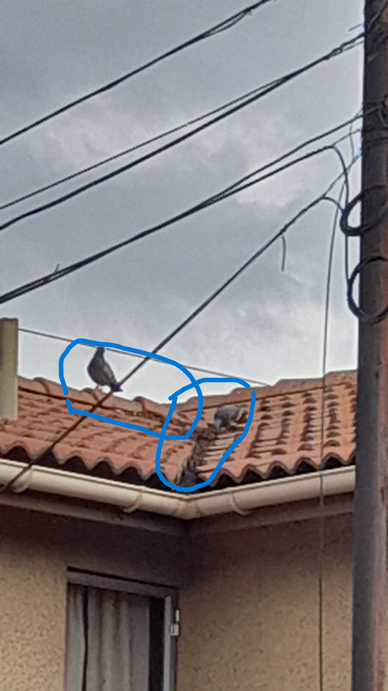
Detalle de obstrucción
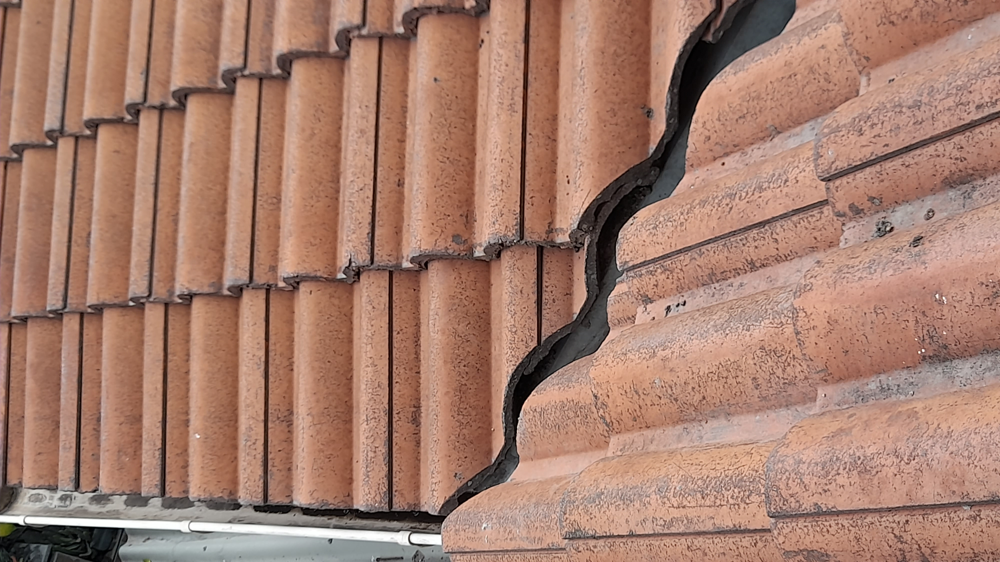
Estado del techo
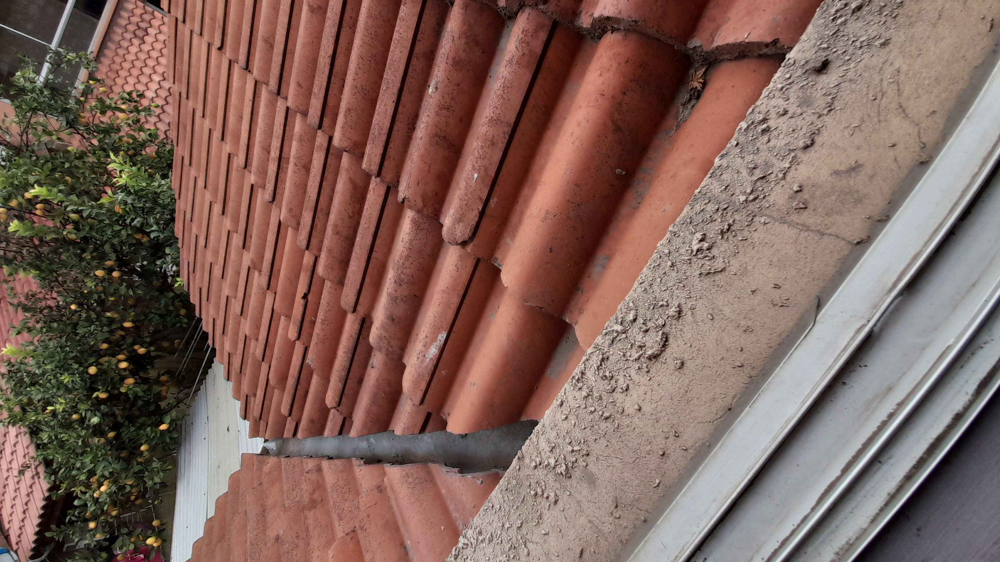
Detalle del techo
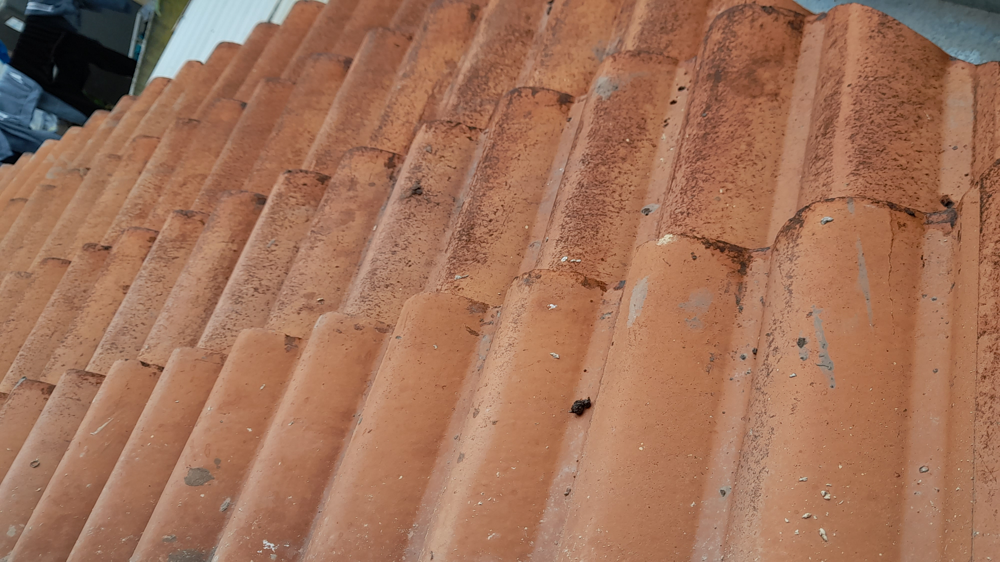
Estado del techo
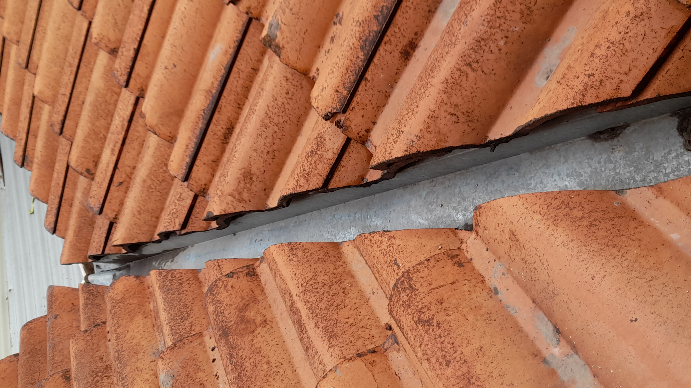
Detalle del techo